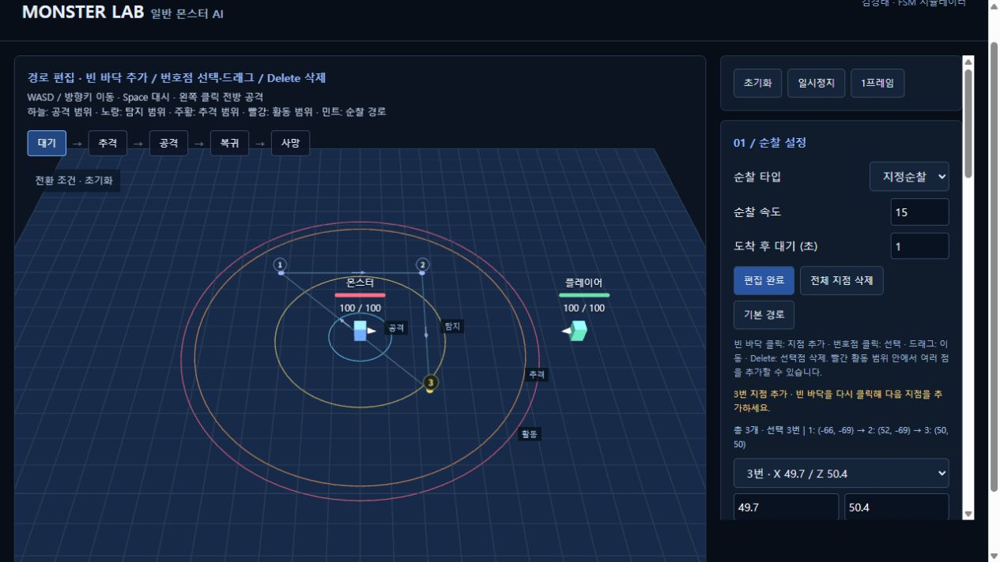

01학력 사항
- 2027
- 학점은행제 게임프로그래밍 공학사 학위 취득 예정
- 2027
- 한국IT직업전문학교 게임기획과 졸업 예정
- 2021
- 한국IT직업전문학교 게임기획과 입학
- 2021
- (구)한림공업고등학교 졸업
GAME DESIGN PORTFOLIO
GAME DESIGNER — KIM KYOUNG TAE
플레이의 이유를 고민하고
재미를 설계하는 기획자 김경태입니다.
◇ COMBAT DESIGN ◇ MONSTER AI ◇ LEVEL DESIGN
 팀 프로젝트 / 01
팀 프로젝트 / 01
1 / 4: FLIP, 팀 프로젝트
ABOUT / KIM KYOUNG TAE
기획의 의도를, 플레이 경험으로.

TRY · MAKE · LEARN
레벨과 콘텐츠를 기획하고, 몬스터의 행동과 전투 규칙을 구체화합니다.
기획한 내용을 직접 만들고 확인하며 더 나은 플레이를 고민합니다.
2025
교내 팀 프로젝트 · 2D 플랫포머
2025
FLIP · 2D 플랫포머
SELECTED PROJECTS
기획 의도부터 플레이의 흐름까지.
직접 수행한 작업을 소개합니다.
대표 프로젝트 · 팀 프로젝트
흑백 전환에 따라 달라지는 발판과 장애물에 대응하고, 전환 타이밍을 판단하며 스테이지를 돌파하는 게임입니다.
담당 역할레벨 기획 · 에셋·사운드 리서치LEVEL DESIGN
GAME DESIGN DOCUMENTS
보스의 전투 선택부터 몬스터의 행동 구조까지.
설계 의도와 구체적인 규칙을 확인하세요.
로스트아크 관련 문서는 개인 포트폴리오용 기획입니다.
TOOLS & IMPLEMENTATION
엔진에서 동작을 확인하고,
구현 과정을 통해 기획의 구체성을 높였습니다.
Behavior Tree와 Blackboard로 대기·추격·공격·복귀 등의 행동을 구성하고, 데이터 테이블을 활용해 캐릭터와 스킬 정보를 관리했습니다.
Behavior Tree · Blackboard · Task · Data Table
이동과 점프, 공격, 무기 교체, 아이템 획득을 구현하며 플레이어와 오브젝트가 서로 연동되는 기본적인 게임 로직을 학습했습니다.
C# · 캐릭터 조작 · 공격 · 오브젝트 상호작용
WORKFLOW EXPERIMENTS
시뮬레이션과 기능 구현을 통해
아이디어를 확인하고 구체화합니다.

01 / SIMULATION
일반 몬스터 AI 기획서를 바탕으로 AI를 활용해 대기·추격·공격·복귀 상태를 시뮬레이션으로 구현했습니다. 플레이어의 위치와 범위 설정을 바꾸며 상태 전환 조건을 확인하고, 순찰 이동 경로와 행동 로그를 통해 기획 의도와 실제 동작을 비교·검증합니다.
시뮬레이터 실행 ↗02 / ATTACK MOTION
AI를 활용해 마우스 공격 입력과 공격 애니메이션을 연결하고, 클릭할 때마다 다음 공격이 이어지는 기본 공격 콤보 구현을 학습했습니다.
CONTACT / KIM KYOUNG TAE
플레이의 이유를 고민하고, 재미를 설계하는 기획자 김경태입니다.